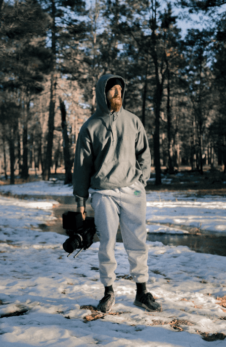
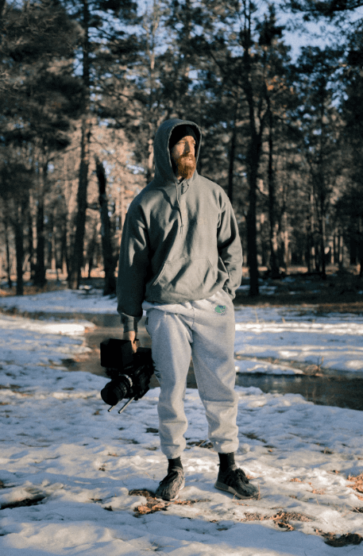

Minha Filosofia e Estilo
Minha paixão pela fotografia transcende a simples captura de imagens; é a busca incessante por momentos que contam uma história, por luzes que revelam emoções e por composições que eternizam a beleza efêmera do mundo. Como Adam Sandler, dedico-me a explorar a essência de cada cena, seja na grandiosidade de uma paisagem, na profundidade de um olhar ou na espontaneidade de um evento.
Meu estilo é uma fusão de técnicas clássicas com abordagens contemporâneas, sempre visando uma estética limpa, cores vibrantes e uma narrativa visual autêntica. Acredito que cada fotografia deve ser um espelho da alma, tanto da minha quanto daquele que a contempla. Através do meu trabalho, busco conectar, inspirar e provocar uma nova perspectiva sobre a vida.
 
